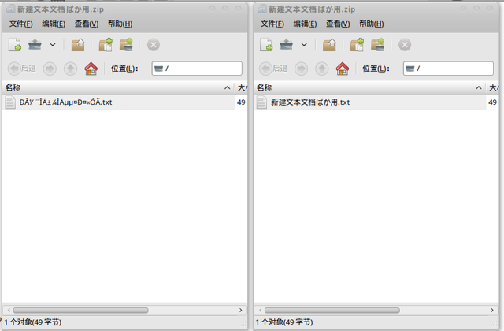

前一段由于收了某个 zip 文件，用 Ubuntu 自带的归档管理器打开，哎呦，那真不是一般的蛋疼……因为里面全是中文文件名，那个乱码啊……
于是我就下决心要解决这个问题。
虽然我的系统还在 9.10，但看到网上一篇文章教人如何在 10.04 中解决这个问题，我就了解了，这个问题至今没有解决。那么什么叫做“半完美”呢？大概意思就是说，对我来说差不多完美了，不过还是很可能出问题的……
命令行方法
一般的方法是利用命令行的方式：
LANG=C 7z x xxxx.zip convmv -f gbk -t utf8 *
用这个方法，我就写了一个 unzip 的小脚本：
#! /bin/sh LANG=C /usr/lib/p7zip/7z x -y "$1" | \ sed -n 's/^Extracting //p' | \ sed '1!G;h;$!d' | \ xargs convmv -f gbk -t utf8 --notest \ >/dev/null 2>/dev/null
功能就是 unzip xxxx.zip 能够自动转码。内部机理我就不详细解释了，其实也不复杂。而且由于我不大会用 sed，所以用了两段，但我相信是不需要的。
不过这个不完美，为什么呢？因为这样我用归档管理器打开还是乱码，根本没有解决任何问题！
我的半完美方法
于是我就开始打 7z 程序的主意……当然最后是成功了的，这里先放对比图哈~

现在做了一个 Ubuntu 的 patch 出来，需要的童鞋可以在这里下载：p7zip_9.04~dfsg.1-1chinese.diff。不要看是 9.04 的，据我观察在 lucid 当中版本号还是这个，p7zip 一直没有变化过…
下载完以后再找个目录获取 p7zip 的代码：
apt-get source p7zip-full
注意这里不需要 sudo 权限，因为获取源代码是自由的~
然后把刚才下载的那个 patch 文件放进代码目录，一般来说应该是 p7zip-9.04~dfsg.1 目录。然后执行下面代码：
gzip -cd p7zip_9.04~dfsg.1-1chinese.diff.gz | patch -p1
然后就常规了：
make all3 sudo make install
需要注意的是，这里安装完以后并没有覆盖原来 p7zip 包的文件，但是放在了一个更优先访问的位置，所以以后执行 7z 相关的操作都会访问这里安装的。
当然，最好把相同功能的 unzip 先卸掉……
现在，在系统里面以任何方式查看或解压任何 zip，理论上应该不会出现乱码了，我想是这样……
解决思路
好了，对于只想解决问题的人，看到这里就够了。现在我想写写如何做到的。
我看了一下 p7zip 的代码，还算是条理相当清晰，其中最重要的部分是 ZipIn.cpp 里面的 ReadFileName 函数，我在里面读取文件名之后插入了一段使用 iconv 函数转换编码的代码。
其后我发现不能这样简单的转换编码，因为在 Linux 下面打包的 zip 文件，文件名是用 UTF-8 而非 GB18030 储存的，这样在转换的时候反而出现乱码。我观察了一下，WinRAR 能够正常读出这些文件名的编码。因此我又在另外一些相关的函数中加入了判断打包平台的代码，以确认是否要转换编码。
此外，由于 GB18030 是硬编码进去的，显然不太好，但我暂时想不出什么更好的解决方法。我想这对于目前的国内自己用应该是足够了，不过考虑到开源软件一向喜欢的国际化，我就实在没什么办法了……如果有人有办法，请一定告诉我！
不过为了平衡，我最后在 config.h 里面加入了 MY_ENCODING 宏，这样可以修改这个以改变硬编码的文字编码值，也算是一点点努力吧……
一点抱怨
由于是在上网本上做的，而且我不想折磨我可怜的 SSD 或者移动硬盘，因此我不得不在内存盘中进行编译。每次都是心惊胆战的，生怕内存不够用开始吃交换区……当然最后还是没有……
话说 Windows 混乱的内码转换害死人啊……
Comments !